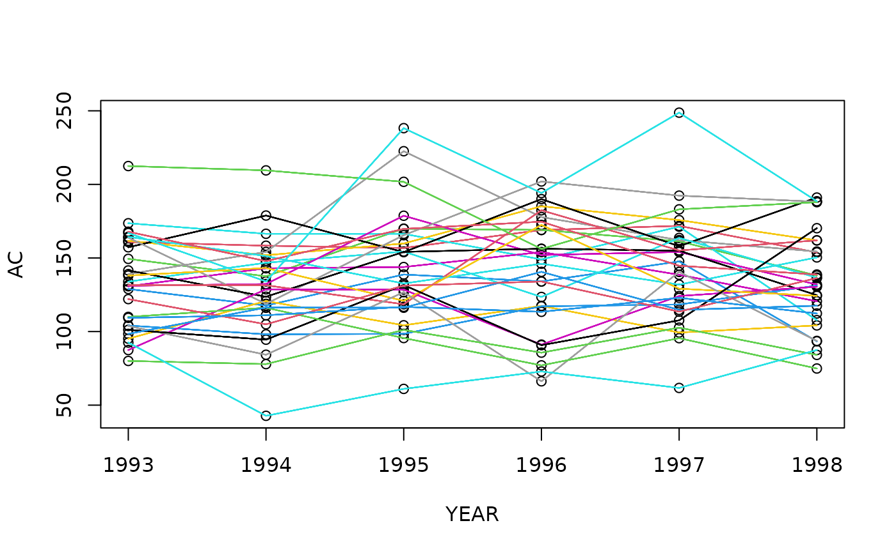

Massachusetts Automobile bodily injury claim datasets
usmassBI.RdThe dataset usmassBI contains automobile bodily injury claims collected in
2001 in Massachusetts, and studied in Frees (2010) and Rempala and Derrig (2005).
There are 348 records with demographic information, in
addition to the claim amount.
Claims that are closed by year end are excluded.
Potential fraudulent claims are from provider=A.
The dataset usmassBI2 contains automobile bodily injury claims collected
between 1993 and 1998 in Massachusetts, and studied in Frees and Wang (2005).
This is a sample of 29 Massachusetts towns described in Frees (2003).
Claim amounts have been rescaled to adjust for the effects of inflation:
all claims are in 1991 dollars, using the Consumer Price Index (CPI)
for the rescaling factor.
Format
usmassBI is a data frame of 8 columns and 1,340 rows:
claimsClaim amount for bodily insurance coverage (in millions of USD).
providerHealth care provider is either
"A"or"Other".providerABinary variable indicating the presence of
"Other"provider.logclaimsLogarithm of claim amount.
usmassBI2 is a data frame of 5 columns and 174 rows:
TOWNCODEThe index of Massachusetts towns.
YEARThe calendar year of the observation.
ACAverage claims per unit of exposure.
PCIPer-capita income of the town.
PPSMPopulation per square mile of the town.
References
Frees, E.W. (2003), Multivariate Credibility for Aggregate Loss Models, North American Actuarial Journal 7(1), 13-37, doi:10.1080/10920277.2003.10596074 .
Frees, E.W. (2010), Regression modelling with actuarial and financial applications, Cambridge University Press, doi:10.1017/CBO9780511814372 .
Frees, E.W. and Wang, P. (2005), Credibility using copulas, North American Actuarial Journal, 9(2), 31-48, doi:10.1080/10920277.2005.10596196 .
Rempala, G.A., and R.A. Derrig (2005), Modeling hidden exposures in claim severity via the EM algorithm, North American Actuarial Journal 9(2), 108-128, doi:10.1080/10920277.2005.10596206 .
Examples
# (1) load of data
#
data(usmassBI)
dim(usmassBI)
#> [1] 348 4
head(usmassBI)
#> claims provider providerA logclaims
#> 1 0.045 Other 1 -3.101
#> 2 0.047 Other 1 -3.058
#> 3 0.070 Other 1 -2.659
#> 4 0.075 Other 1 -2.590
#> 5 0.077 Other 1 -2.564
#> 6 0.092 Other 1 -2.386
# (1) load of data
#
data(usmassBI2)
dim(usmassBI2)
#> [1] 174 5
head(usmassBI2)
#> TOWNCODE YEAR AC PCI PPSM
#> 1 10 1993 160.8522 18134.04 1475.551
#> 2 10 1994 158.3382 18495.88 1461.811
#> 3 10 1995 156.8098 18778.29 1488.991
#> 4 10 1996 168.9899 18740.46 1502.932
#> 5 10 1997 171.8229 18809.62 1534.425
#> 6 10 1998 153.7644 19034.59 1557.694
# summary tables
sapply(levels(usmassBI2$TOWNCODE), function(x) summary(subset(usmassBI2, TOWNCODE == x)$AC))
#> 10 11 12 13 14 15 16
#> Min. 153.7644 137.5546 93.37989 107.7547 120.5966 151.8762 139.0414
#> 1st Qu. 157.1919 140.8856 120.47317 153.3561 132.7179 160.3018 154.1628
#> Median 159.5952 155.3649 131.48476 166.4309 140.7887 161.8315 158.2657
#> Mean 161.7629 154.2187 126.73653 155.7498 138.4675 166.0429 168.3390
#> 3rd Qu. 166.9555 167.1305 137.58932 170.0759 143.6327 172.2995 173.9010
#> Max. 171.8229 169.9164 147.64297 173.5932 154.0223 185.1377 222.5531
#> 17 21 30 31 32 33 34
#> Min. 153.9679 123.5031 131.1032 95.14192 118.8127 123.6560 118.5483
#> 1st Qu. 157.4420 134.5895 132.0384 100.53871 164.2341 128.9224 131.4794
#> Median 168.4055 141.6728 142.1513 104.21278 176.8538 147.8371 143.3353
#> Mean 171.5139 143.1298 146.6897 106.84943 171.7833 142.5468 146.8374
#> 3rd Qu. 187.2017 152.4729 153.5570 114.15079 191.3367 154.7461 160.2432
#> Max. 191.0500 163.6289 178.7061 120.75161 201.9880 156.2837 182.3985
#> 35 36 37 38 39 40 41
#> Min. 156.1779 98.12708 131.8865 87.43392 120.8712 66.19602 90.73855
#> 1st Qu. 184.2678 99.86060 136.0092 99.38295 125.4874 86.59736 96.15222
#> Median 194.8386 110.62590 148.2342 126.32575 133.5862 98.70961 104.40206
#> Mean 191.8146 111.23757 146.1070 115.05575 137.9888 102.52786 115.97555
#> 3rd Qu. 207.5814 118.07697 151.0436 128.63893 141.8957 121.01541 125.60764
#> Max. 212.4591 131.21372 164.3731 130.43709 172.4362 140.54129 170.23221
#> 42 43 44 45 50 51 52
#> Min. 138.7527 74.89143 98.40911 134.0481 104.9257 77.88428 109.3159
#> 1st Qu. 145.5051 81.64127 115.09644 172.3513 115.6626 81.05670 111.3542
#> Median 157.8426 95.54573 116.25596 191.3474 126.6369 84.90409 112.8505
#> Mean 157.2694 94.85588 117.29510 195.1108 123.6846 88.58345 114.2994
#> 3rd Qu. 169.2934 106.36709 117.23322 227.2048 133.3016 97.25156 115.9478
#> Max. 174.6756 116.17174 140.58064 248.7453 136.3806 102.66661 122.9441
#> 53
#> Min. 42.74147
#> 1st Qu. 61.19799
#> Median 67.27844
#> Mean 69.72357
#> 3rd Qu. 83.82520
#> Max. 92.53110
sapply(unique(usmassBI2$YEAR), function(x) summary(subset(usmassBI2, YEAR == x)$AC))
#> [,1] [,2] [,3] [,4] [,5] [,6]
#> Min. 80.0296 42.74147 61.03689 66.19602 61.68127 74.89143
#> 1st Qu. 104.1018 116.17174 118.54830 117.14998 118.38596 112.28735
#> Median 131.5703 131.44917 138.76372 149.00162 144.72619 131.95572
#> Mean 133.0011 129.03384 143.38484 141.17319 142.94148 134.36841
#> 3rd Qu. 160.8522 147.84200 165.46094 172.43616 162.16841 154.36297
#> Max. 212.4591 209.52330 238.22397 201.98799 248.74525 191.04996
#plot average claims
plot(AC~YEAR, data=usmassBI2)
for(i in usmassBI2$TOWNCODE) lines(AC~YEAR, data=subset(usmassBI2, TOWNCODE== i), col=i)
